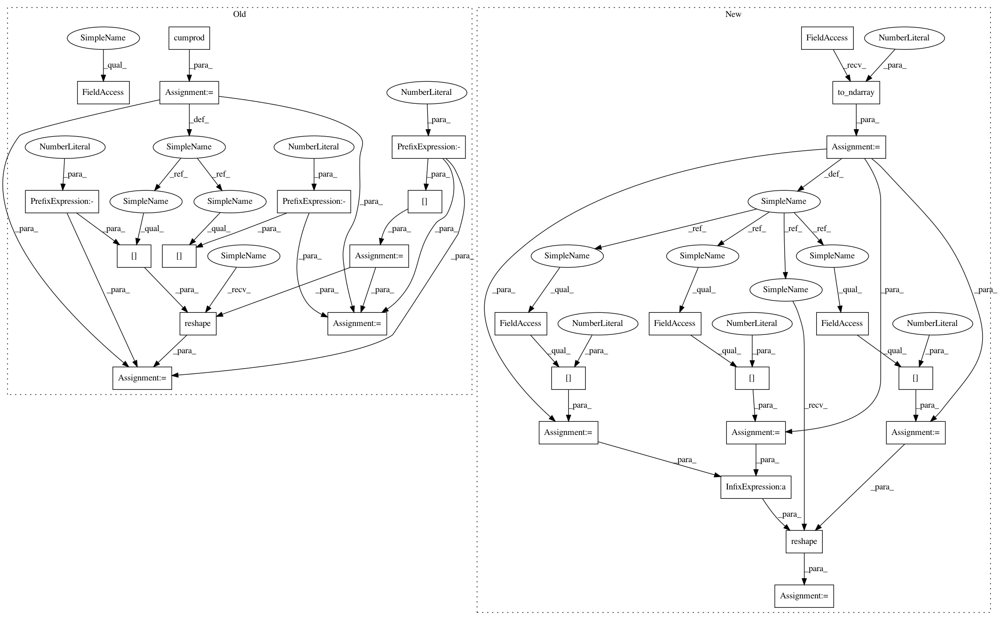

300640c864fedfaba2ff31af360fd975e5db23ee,geomstats/discretized_curves_space.py,L2Metric,dist,#L2Metric#Any#Any#,65
Before Change
sampled at points_a and points_b.
assert point_a.shape == point_b.shape
shape_a = point_a.shape
n_coord = shape_a[-1]
n_sampling_points = shape_a[-2]
shape_cumprod = np.cumprod(point_a.shape)
point_a = point_a.reshape(shape_cumprod[-2], n_coord)
point_b = point_b.reshape(shape_cumprod[-2], n_coord)
dist = self.embedding_metric.dist(point_a, point_b)
dist = dist.reshape(shape_a[:-1])
dist = gs.sqrt(gs.sum(dist ** 2, -1) / n_sampling_points)
After Change
Geodesic distance between two discretized curves.
assert curve_a.shape == curve_b.shape
curve_a = gs.to_ndarray(curve_a, to_ndim=3)
curve_b = gs.to_ndarray(curve_b, to_ndim=3)
n_curves = curve_a.shape[0]
n_sampling_points = curve_a.shape[1]
n_coords = curve_a.shape[2]
curve_a = curve_a.reshape(n_curves * n_sampling_points, n_coords)
curve_b = curve_b.reshape(n_curves * n_sampling_points, n_coords)
dist = self.embedding_metric.dist(curve_a, curve_b)
dist = dist.reshape(n_curves, n_sampling_points)
In pattern: SUPERPATTERN
Frequency: 3
Non-data size: 28
Instances
Project Name: geomstats/geomstats
Commit Name: 300640c864fedfaba2ff31af360fd975e5db23ee
Time: 2018-11-12
Author: alice.le-brigant@enac.fr
File Name: geomstats/discretized_curves_space.py
Class Name: L2Metric
Method Name: dist
Project Name: geomstats/geomstats
Commit Name: 300640c864fedfaba2ff31af360fd975e5db23ee
Time: 2018-11-12
Author: alice.le-brigant@enac.fr
File Name: geomstats/discretized_curves_space.py
Class Name: L2Metric
Method Name: exp
Project Name: geomstats/geomstats
Commit Name: 300640c864fedfaba2ff31af360fd975e5db23ee
Time: 2018-11-12
Author: alice.le-brigant@enac.fr
File Name: geomstats/discretized_curves_space.py
Class Name: L2Metric
Method Name: log